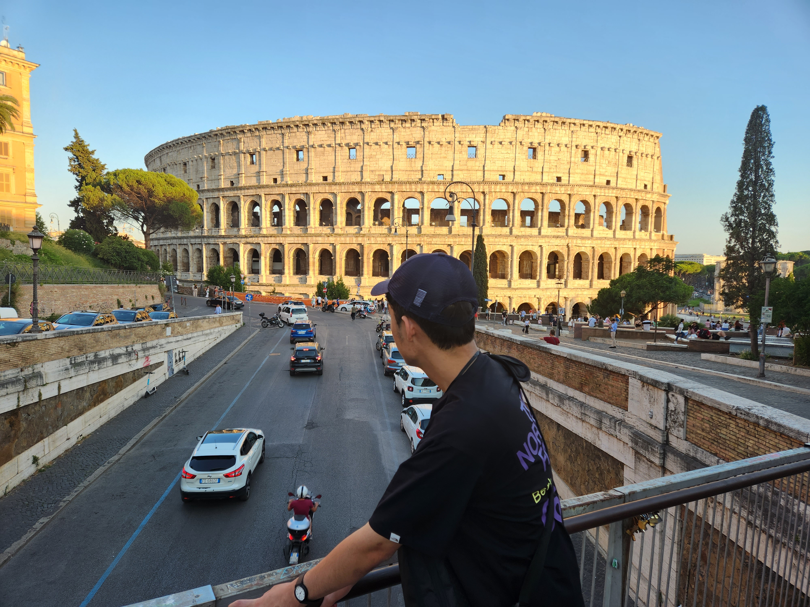
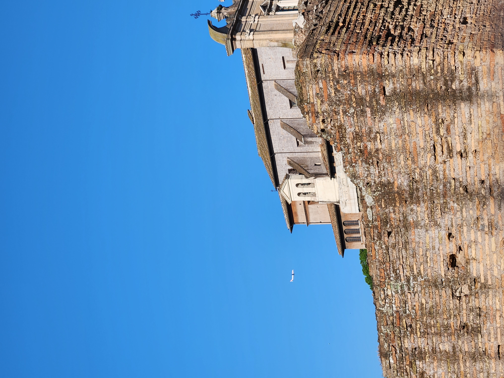
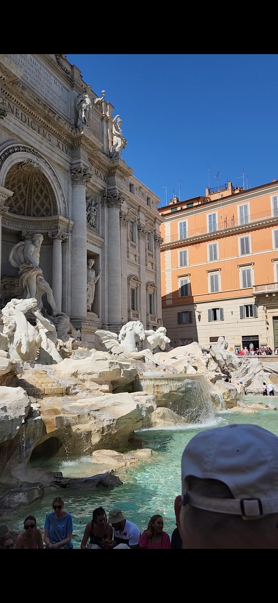
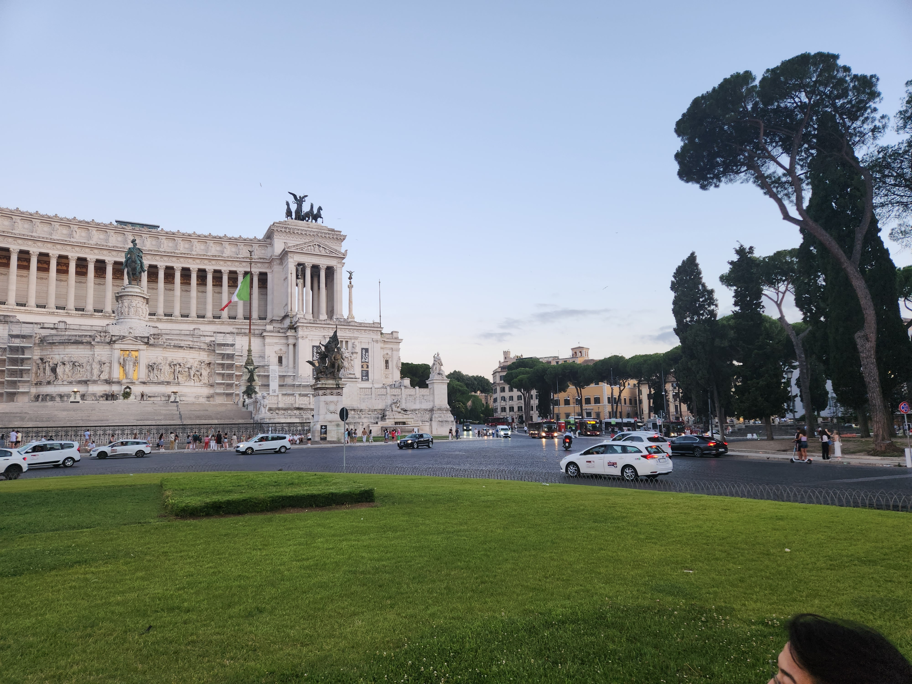
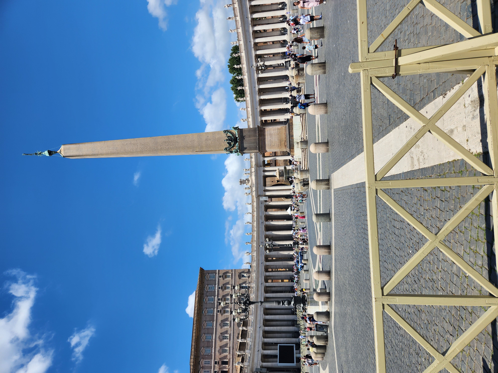
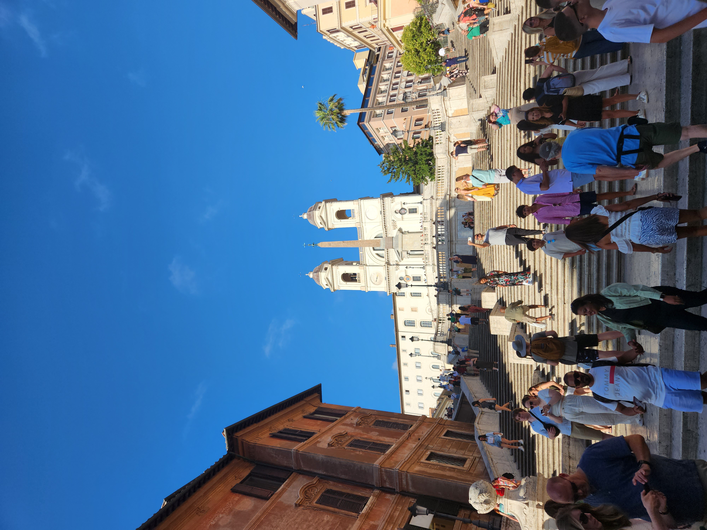

- 나폴리
- 로마
- 피렌체
- 베네치아
- 밀라노
7/2
로마
아침에 일어나서 밥을 먹은 후 나폴리 기차역에서 기차를 타고 로마로 다시 돌아왔다.

콜로세움을 갔다.

점심을 먹고, 포로 로마노를 갔다.

트레비 분수를 보았다.트레비 분수에는 동전을 던지면 하고자 하는 일이 이루어지고 사랑이 이루어진다는 전설이 있다. 분수에 내가 하는 일 다 잘 되길 기원하며
물속에 동전을 던지고 왔다.

빅토리오 에미누엘레 2세 기념관을 갔다.
그리고 저녁을 먹고 숙소에 돌아와서 잠을 잤다.
7/3

아침 일찍부터 시작하는 바티칸 시국 투어 프로그램이 있었는데, 그걸 신청해서 무려 아침 7시부터 오후 2시까지 돌아다녔다. 아침도 제대로 못 먹고 나와서
힘들었지만 그래도 재미있었다.

점심을 먹고, 성천사의 성을 갔다. 제일 높은 층을 가면 로마 시내가 내려다 보이는데, 풍경이 정말 아름다웠다.

그리고 스페인 광장을 갔다.
저녁을 먹고 로마 시내 몇곳을 도보로 투어하는 프로그렘이 있어서 신청을 했다. 가이드 분이 로마의 역사와 유적지 설명을 잘해주셔서 좋았다. 사진도 잘 찍어 주셨다.
그리고 호텔에 돌아와서 잠을 잤다.